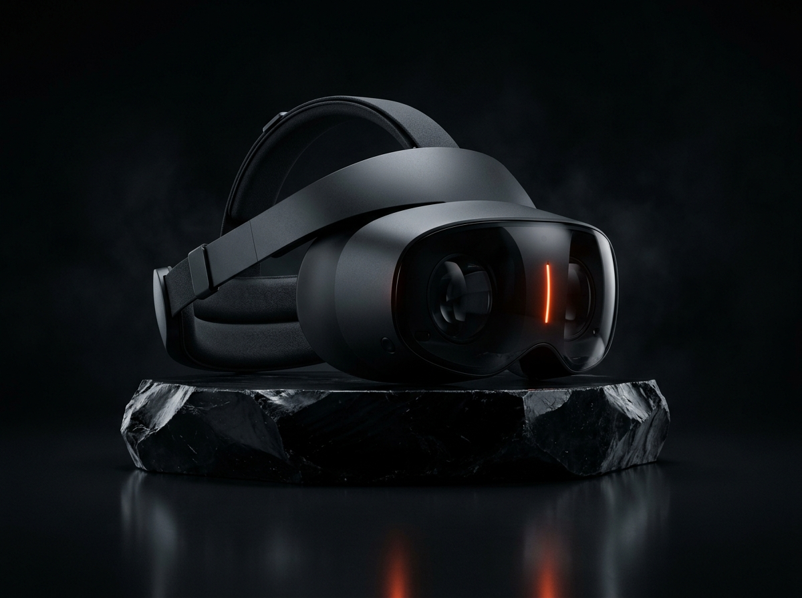
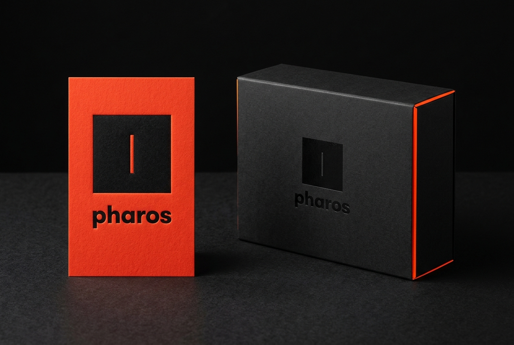

Light through the slit.
Reality without glass.
A quantum leap in ambient spatial computing. Direct 8K retinal micro-projection channeled through an optical slit aperture. Zero bulky goggles. Zero chromatic aberration. Pure atmospheric intelligence.

Micro-milled optical waveguide sensor operating at 848nm infrared carrier frequency for sub-millimeter tracking.
Precision die-cast magnesium-lithium alloy frame with ceramic micro-arc oxidation finish.
Diffractive optical element beaming infinite-depth focus directly into human ocular cones.
Ten times thinner than traditional refractive glass pancake lenses. Total optical transparency.
Real-time binocular alignment at 144 FPS peak rendering to eliminate vestibular motion sickness.
Ergonomically balanced across the temporal arch for uninterrupted 12-hour continuous wear.
True obsidian dark field projection. Pixels turn completely off, merging digital graphics into physical light.
Why Glass Displays Are Obsolete
Conventional VR traps heavy glass panels 3 inches from your cornea. Pharos projects photons directly through a micro-aperture slit onto your retina.
Heavy Glass & Chromatic Blur
- ✕ 500g–650g heavy glass strain on the cervical spine
- ✕ Fixed focal plane causing vergence-accommodation conflict
- ✕ Chromatic aberration and lens glare at peripheral angles
- ✕ Social isolation behind opaque outward facing shells
Direct Aperture Waveguide
- ✓ 142g ultra-lightweight magnesium-lithium unibody
- ✓ Dynamic multi-plane focal depth that shifts naturally with human pupil gaze
- ✓ 848nm diffractive aperture with zero edge fringing or glare
- ✓ 92% ambient light pass-through for organic eye contact
Ambient Intelligence Floating in Space
Pharos OS replaces flat screens with contextual light volumes anchored directly to physical surfaces with millimeter precision.
Designed for the Physical Realm
Hardware that commands reverence before it ever powers on. Matte carbon fiber, precision debossing, and hot cadmium foils.

The Monolith Packaging Suite
Crafted from 1200gsm compressed carbon-black paperboard, coated with tactile soft-touch polymer, and accented by a hot-stamped cadmium orange inner bevel.
Laser-Debossed Cotton Stationery
600gsm duplexed cotton stock blind-debossed with the signature slit aperture mark and precision micro-printed with calibration coordinates in JetBrains Mono.
The Slit Square Mark
A 100-unit square enclosing an optical beam-slit aperture. It represents the light passing through a diffraction barrier—the mathematical threshold where photons transform into images.
{kind=link}
Hardware & Optical Specifications
Comprehensive telemetry sheet for hardware developers, optical researchers, and systems founders.
| Subsystem | Engineering Specification |
|---|---|
| Display Engine | Dual RGB micro-LED optical engines with 8K aggregate resolution (42 PPD retinal density) |
| Waveguide Architecture | 0.4mm diffractive surface-relief grating with 848nm infrared carrier modulation |
| Field of View | 110° diagonal instantaneous field with infinite focal convergence |
| Spatial Tracking | Inside-out 6DoF optical visual odometry + dual 240Hz sub-millimeter gaze cameras |
| Compute Module | Custom Pharos Silicon P1 neural processor delivering 18 TOPS dedicated optical inference |
| Chassis & Materials | Magnesium-lithium cast unibody, titanium headband hinges, breathable 3D spacer mesh |
| Acoustics | Spatial beamforming bone-conduction transducers with custom ambient noise dampening |
| Battery & Thermal | Hot-swappable magnetic power rail; 4.5 hours continuous heavy compute, 18 hours standby |
Build on the Optical Horizon.
Reserve the Pharos One Developer Edition. Includes the complete headset, magnetic power rail, neural wrist peripheral, and full low-level waveguide SDK access.